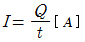
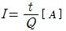
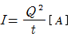
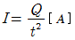
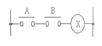
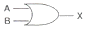
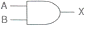
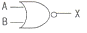
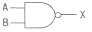
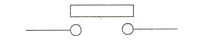

승강기기능사 (2014-10-11 기출문제)
1과목: 승강기개론
1. 기계실에 설치할 설비가 아닌 것은?
- 완충기
- 권상기
- 조속기
- 제어반
(정답률: 76%)

2. 가변전압 가변주파수 제어방식과 관계가 없는 것은?
- PAM
- VVVF
- 인버터
- MG세트
(정답률: 69%)
3. 엘리베이터가 최종단층을 통과하였을 때 엘리베이터를 정지시키며 상승, 하강 양방향 모두 운행이 불가능하게 하는 안전장치는?
- 슬로다운 스위치
- 파킹 스위치
- 피트 정지스위치
- 파이널 리미트 스위치
(정답률: 80%)
4. 일반적인 에스컬레이터 경사도는 몇 도(° )를 초과하지 않아야 하는가?
- 25°
- 30°
- 35°
- 40°
(정답률: 83%)
5. 사람이 출입할 수 없도록 정격하중이 300 ㎏ 이하이고 정격속도가 1㎧ 인 승강기는?
- 덤웨이터
- 비상용 엘리베이터
- 승객·화물용 엘리베이터
- 수직형 휠체어리프트
(정답률: 86%)
6. 에스컬레이터의 안전율에 대한 기준으로 옳은 것은?(관련 규정 개정전 문제로 여기서는 기존 정답인 1번을 누르면 정답 처리됩니다. 자세한 내용은 해설을 참고하세요.)
- 트러스와 빔에 대해서는 5 이상
- 트러스와 빔에 대해서는 10 이상
- 체인류에 대해서는 6 이상
- 체인류에 대해서는 8 이상
(정답률: 76%)
7. 고속의 엘리베이터에 이용되는 경우가 많은 조속기(Governor)는?
- 롤 세프티형
- 디스크형
- 플랙시블형
- 플라이 볼형
(정답률: 71%)
8. 전동기의 회전을 감속시키고 암이나 로프 등을 구동시켜 승강기 문을 개폐시키는 장치는?
- 도어 인터록
- 도어 머신
- 도어 스위치
- 도어 클로저
(정답률: 52%)
9. 에스컬레이터 또는 수평보행기에 모두 설치해야 하는 것이 아닌 것은?
- 제동기
- 스커트가드 안전장치
- 디딤판체인 안전장치
- 구동체인 안전장치
(정답률: 46%)
10. 권상기 도르래 홈에 대한 설명 중 옳지 않은 것은?
- 마찰계수의 크기는 U홈<언더커트 홈<V홈 순이다.
- U홈은 로프와의 면압이 작으므로 로프의 수명은 길어진다.
- 언더커트 홈의 중심각이 작으면 트랙션 능력이 크다.
- 언더커트 홈은 U홈과 V홈의 중간적 특성을 갖는다.
(정답률: 53%)
11. 화재 시 소화 및 구조활동에 적합하게 제작된 엘리베이터는?
- 덤웨이터
- 비상용 엘리베이터
- 전망용 엘리베이터
- 승객·화물용 엘리베이터
(정답률: 87%)
12. 승강장문의 유효 출입구 폭은 키 출입구의 폭 이상으로 하되, 양쪽 측면 모두 카 출입구 측면의 폭보다 몇 ㎜를 초과하지 않아야 하는가?
- 50
- 60
- 70
- 80
(정답률: 52%)
13. 유압회로의 구성요소 중 역류 제지 밸브(check valve)의 설명으로 올바른 것은?
- 압력맥동이 적고 소음과 진동이 적은 스크류 펌프가 많이 사용된다.
- 회로의 압력이 상용압력의 125% 이상 높아지면 바이패스 회로를 열어 압력상승을 방지한다.
- 탱크로 되돌려지는 유량을 제어하여 플런저의 상승속도를 간접적으로 처리하는 밸브이다.
- 한쪽 방향으로만 기름이 흐르도록 하는 밸브로서 기름이 역류하여 키가 낙하하는 것을 방지한다.
(정답률: 71%)
14. 로프식(전기식) 엘리베이터에서 카에 여러 개의 비상정지장치가 설치된 경우의 비상정지장치는?
- 평시 작동형
- 즉시 작동형
- 점차 작동형
- 순간 작동형
(정답률: 61%)
15. FGC(Flexible Guide Clamp)형 비상정지장치의 장점은?
- 베어링을 사용하기 때문에 접촉이 확실하다.
- 구조가 간단하고 복구가 용이하다.
- 레일을 죄는 힘이 초기에는 약하나, 하강함에 따라 강해진다.
- 평균 감속도를 0.5g으로 제한한다.
(정답률: 58%)
2과목: 안전관리
16. 승강로의 점검문과 비상문에 관한 내용으로 틀린 것은?(관련 규정 개정전 문제로 여기서는 기존 정답인 3번을 누르면 정답 처리됩니다. 자세한 내용은 해설을 참고하세요.)
- 이용자의 안전과 유지보수이외에는 사용하지 않는다.
- 비상문은 폭 0.35m 이상, 높이 1.8m 이상이어야 한다.
- 점검문 및 비상문은 승강로 내부로 열려야 한다.
- 트랩방식의 점검문일 경우는 폭 0.5m 이하, 높이 0.5m 이하여야 한다.
(정답률: 78%)
17. 정전 시 카내 예비조명장치에 관한 설명으로 틀린 것은?(오류 신고가 접수된 문제입니다. 반드시 정답과 해설을 확인하시기 바랍니다.)
- 조도는 2[lx]이상이어야 한다.
- 조도는 램프중심부에서 2m 지점의 수직면상의 조도이다.
- 정전 후 60초 이내에 점등되어야 한다.
- 1시간 동안 전원이 공급되어야 한다.
(정답률: 37%)
18. 엘리베이터의 문 닫힘 안전장치 중에서 카 도어의 끝단에 설치하여 이물체가 접촉되면 도어의 닫힘이 중지되는 안전장치는?
- 광전장치
- 초음파장치
- 세이프티 슈
- 가이드 슈
(정답률: 76%)
19. 재해 발생의 원인 중 가장 높은 빈도를 차지하는 것은?
- 열량의 과잉 억제
- 설비의 배치 착오
- 과부하
- 작업자의 작업행동 부주의
(정답률: 77%)
20. 감전에 영향을 주는 1차적 감전 요소가 아닌 것은?
- 통전시간
- 통전전류의 크기
- 인체의 조건
- 전원의 종류
(정답률: 71%)
21. 승강기의 안전점검시 체크 사항과 가장 거리가 먼 것은?
- 각종 안전장치가 유효하게 작동될 수 있도록 조정되어 있는지의 여부
- 정격용량을 초과한 과부하의 적재 여부
- 소비 전력량의 정도
- 승강기 운전 및 사용법 숙지 여부
(정답률: 49%)
22. 엘리베이터의 소유자나 안전(운행)관리자에 대한 교육내용이 아닌 것은?
- 엘리베이터에 관한 일반지식
- 엘리베이터에 관한 법령 등의 지식
- 엘리베이터의 운행 및 취급에 관한 지식
- 엘리베이터의 구입 및 가격에 관한 지식
(정답률: 86%)
23. 사고원인이 잘못 설명된 것은?
- 인적 원인 : 불안전한 행동
- 물적 원인 : 불안전한 상태
- 교육적인 원인 : 안전지식 부족
- 간접 원인 : 고의에 의한 사고
(정답률: 73%)
24. 다음 중 전기재해에 해당되는 것은?
- 동상
- 협착
- 전도
- 감전
(정답률: 86%)
25. 승강기 보수의 자체점검 시 취해야 할 안전조치 사항이 아닌 것은?
- 보수작업 소요시간 표시
- 보수 계약 기간 표시
- 보수 중 이라는 사용금지 표시
- 작업자명과 연락처의 전화번호
(정답률: 73%)
26. 작업시 이상 상태를 발견한 경우 처리절차가 옳은 것은?
- 작업중단 → 관리자에 통보 → 이상상태 제거 → 재발방지대책수립
- 관리자에 통보 → 작업중단 → 이상상태 제거 → 재발방지대책수립
- 작업중단 → 이상상태 제거 → 관리자에 통보 → 재발방지대책수립
- 관리자에 통보 → 이상상태 제거 → 작업중단 → 재발방지대책수립
(정답률: 77%)
27. 기계실에 승강기를 보수하거나 검사시의 안전수칙에 어긋나는 것은?
- 전기장치를 검사할 경우는 모든 전원스위치를 ON 시키고 검사한다.
- 규정복장을 착용하고 소매끝이 회전물체에 말려 들어가지 않도록 주의한다.
- 가동부분은 필요한 경우를 제외하고는 움직이지 않도록 한다.
- 브레이크 라이너를 점검할 경우는 전원스위치를 OFF시킨 상태에서 점검하도록 한다.
(정답률: 82%)
28. 기계설비의 위험방지를 위해 보전성을 개선하기 위한 사항과 거리가 먼 것은?
- 안전사고 예방을 위해 주기적인 점검을 해야 한다.
- 고가의 부품인 경우는 고장발생 직후에 교환한다.
- 가동율을 높이고 신뢰성을 향상시키기 위해 안전 모니터링 시스템을 도입하는 것은 바람직하다.
- 보전용 통로나 작업장의 안전 확보는 필요하다.
(정답률: 83%)
29. 전기식 엘리베이터에서 현수로프 안전율은 몇 이상이여야 하는가?(관련 규정 개정전 문제로 여기서는 기존 정답인 4번을 누르면 정답 처리됩니다. 자세한 내용은 해설을 참고하세요.)
- 8
- 9
- 11
- 12
(정답률: 74%)
30. 카 상부에 탑승하여 작업할 때 지켜야 할 사항으로 옳지 않은 것은?
- 정전스위치를 차단한다.
- 카 상부에 탑승하기 전 작업등을 점등한다.
- 탑승 후에는 외부 문부터 닫는다.
- 자동스위치를 점검 쪽으로 전환한 후 작업한다.
(정답률: 37%)
3과목: 승강기보수
31. 비상용 엘리베이터에 사용되는 권상기의 도르래 교체기준으로 부적합한 것은?
- 도르래에 균열이 발생한 경우
- 제조사가 권장하는 크리프량을 초과하지 않은 경우
- 도르래 홈의 마모로 인해 슬립이 발생한 경우
- 도르래 홈에 로프자국이 심한 경우
(정답률: 64%)
32. 기계실이 있는 엘리베이터의 승강로 내에 설치되지 않는 것은?
- 균형추
- 완충기
- 이동 케이블
- 조속기
(정답률: 37%)
33. 시험전압(직류) 250V 전기설비의 절연저항은 몇 ㏁ 이상이어야 하는가? (관련 규정 개정전 문제로 여기서는 기존 정답인 2번을 누르면 정답 처리됩니다. 자세한 내용은 해설을 참고하세요.)
- 0.15
- 0.25
- 0.5
- 1
(정답률: 74%)
34. 카와 균형추에 대한 로프거는 방법으로 2:1 로핑방식을 사용하는 경우 그 목적으로 가장 적절한 것은?
- 로프의 수명을 연장하기 위하여
- 속도를 줄이거나 적재하중을 증가하기 위하여
- 로프를 교체하기 쉽도록 하기 위하여
- 무부하로 운전할 때를 대비하기 위하여
(정답률: 64%)
35. 에스컬레이터의 핸드레일에 관한 설명 중 틀린 것은?
- 핸드레일은 디딤판과 속도가 일치해야 하며 역방향으로 승각하여야 한다.
- 정상운행 동안 핸드레일이 핸드레일 가이드로부터 이탈되지 않아야 한다.
- 핸드레일 인입구에 적절한 보호장치가 설치되어 있어야 한다.
- 핸드레일 인입구에 이물질 및 어린이의 손이 끼이지 않도록 안전스위치가 있어야 한다.
(정답률: 78%)
36. 카 내에서 행하는 검사에 해당되지 않는 것은?
- 카 시브의 안전상태
- 카 내의 조명상태
- 비상 통화장치
- 운전반 버튼의 동작상태
(정답률: 68%)
37. 피트 바닥과 카의 가장 낮은 부품 사이의 수직거리는 몇 m 이상이어야 하는가?
- 2.0
- 1.5
- 0.5
- 1.0
(정답률: 37%)
38. 롤 세프티형 조속기의 점검방법에 대한 설명으로 틀린 것은?
- 각 지점부의 부착상태, 급유상태 및 조정 스프링에 약화 등이 없는지 확인한다.
- 조속기 스위치를 끊어 놓고 안전회로가 차단됨을 확인한다.
- 카 위에 타고 점검운전을 하면서 조속기 로프의 마모 및 파단상태를 확인하지만, 로프 텐션의 상태는 확인할 필요가 없다.
- 시브 홈의 마모상태를 확인한다.
(정답률: 65%)
39. 유압 엘리베이터의 전동기는?
- 상승시에만 구동된다.
- 하강시에만 구동된다.
- 상승시와 하강시 모두 구동된다.
- 부하의 조선에 따라 상승시 또는 하강시에 구동된다.
(정답률: 49%)
40. 플라이 볼형 조속기의 구성요소에 해당되지 않는 것은?
- 플라이 웨이트
- 로프캐치
- 플라이 볼
- 베벨기어
(정답률: 41%)
41. 승강기용 제어반에 사용되는 릴레이의 교체기준으로 부적합한 것은?
- 릴레이 집점표면에 부식이 심한 경우
- 릴레이 접점이 마모, 전이 및 열화된 경우
- 채터링이 발생된 경우
- 리미트 스위치 레버가 심하게 손상된 경우
(정답률: 53%)
42. 일종의 압력조정 밸브로 회로의 압력이 상용압력의 125% 이상 높아지게 되면 바이패스 회로를 여는 밸브는?(관련 규정 개정전 문제로 여기서는 기존 정답인 3번을 누르면 정답 처리됩니다. 자세한 내용은 해설을 참고하세요.)
- 사이렌서
- 스톱 밸브
- 안전 밸브
- 체크 밸브
(정답률: 77%)
43. 에스컬레이터의 안전장치에 관한 설명으로 틀린 것은?
- 승강장에서 디딤판의 승강을 정지시키는 것이 가능한 장치이다.
- 사람이나 물건이 핸드레일 인입구에 꼈을 때 디딤판의 승강을 자동적으로 정지시키는 장치이다.
- 상하 승강장에서 디딤판과 콤플레이트 사이에 사람이나 물건이 끼이지 않도록 하는 장치이다.
- 디딤판체인이 절단 되었을 때 디담판의 승강을 수동으로 정지시키는 장치이다.
(정답률: 63%)
44. 와이어로프 클립(wire rope clip)의 체결방법으로 가장 적합한 것은?(오류 신고가 접수된 문제입니다. 반드시 정답과 해설을 확인하시기 바랍니다.)
(정답률: 66%)
45. 유압식 엘리베이터의 속도제어에서 주회로에 유량제어밸브를 삽입하여 유량을 직접 제어하는 회로는?(오류 신고가 접수된 문제입니다. 반드시 정답과 해설을 확인하시기 바랍니다.)
- 미터오프 회로
- 미터인 회로
- 블리디오프 회로
- 블리디인 회로
(정답률: 62%)
4과목: 기계,전기기초이론
46. 에스컬레이터 구동기의 공칭속도는 몇 %를 초과하지 않아야 하는가?
- ±1
- ±3
- ±5
- ±8
(정답률: 55%)
47. 전기력선의 성질 중 옳지 않은 것은?
- 양전하에서 시작하여 음전하에서 끝난다.
- 전기력선의 접선방향이 전장의 방향이다.
- 전기력선은 등전위면과 직교한다.
- 두 전기력선은 서로 교차한다.
(정답률: 61%)
48. 전류 I[A]와 전하 Q[C] 및 시간 t[초]와의 상관관계를 나타낸 식은?




(정답률: 66%)
49. 크레인, 엘리베이터, 공작기계, 공기압축기 등의 운전에 가장 적합한 전동기는?
- 직권전동기
- 분권전동기
- 차등복권전동기
- 가동복권전동기
(정답률: 38%)
50. 끝이 고정된 와이어로프 한쪽을 당길 때 와이어로프에 작용하는 하중은?
- 인장하중
- 압축하중
- 반복하중
- 충격하중
(정답률: 76%)
51. 응력을 옳게 표현한 것은?
- 단위길이에 대한 늘어남
- 단위체적에 대한 질량
- 단위면적에 대한 변형률
- 단위면적에 대한 힘
(정답률: 50%)
52. 그림과 같은 시퀀스도와 같은 논리회로의 기호는?





(정답률: 60%)
53. 다음과 같은 그림기호는?

- 플로트레스 스위치
- 리미트 스위치
- 텀블러 스위치
- 누름버튼 스위치
(정답률: 60%)
54. 기어, 풀리, 플라이휘일을 고정시켜 회전력을 전달시키는 기계요소는?
- 키
- 와셔
- 베어링
- 클러치
(정답률: 36%)
55. 포와송비에 대한 설명으로 옳은 것은?
- 세로변형률을 가로변형률로 나눈 값이다.
- 가로변형률을 세로변형률로 나눈 값이다.
- 세로변형률과 가로변형률을 곱한 값이다.
- 세로변형률과 가로변형률을 더한 값이다.
(정답률: 54%)
56. 다음 중 직류전압의 측정범위를 확대하여 측정할 수 있는 계기는?
- 변압기
- 배율기
- 분류기
- 변류기
(정답률: 63%)
57. 자기인덕턴스 L[H]의 코일에 전류 I[A]를 흘렸을 때 여기에 축적되는 에너지 W [J]를 나타내는 공식으로, 옳은 것은?
- W = L I2
- W = 1/2 L I2
- W = L2 I
- W = 1/2 L2 I
(정답률: 54%)
58. 다음 중 3상 유도전동기의 회전방향을 바꾸는 방법은?
- 두선의 접속변환
- 기상보상기 이용
- 전원의 주파수변환
- 전원의 극수변환
(정답률: 52%)
59. 자극수 4. 전기자 도체수 400, 각 자극의 유효자속수 0.01㏝, 회전수 600rpm인 직류발전기가 있다. 전기자권수가 파권인 경우 유기기전력(V)은?
- 40
- 70
- 80
- 100
(정답률: 40%)
60. 하중의 시간변화에 따른 분류가 아닌 것은?
- 충격하중
- 반복하중
- 전단하중
- 교번하중
(정답률: 33%)